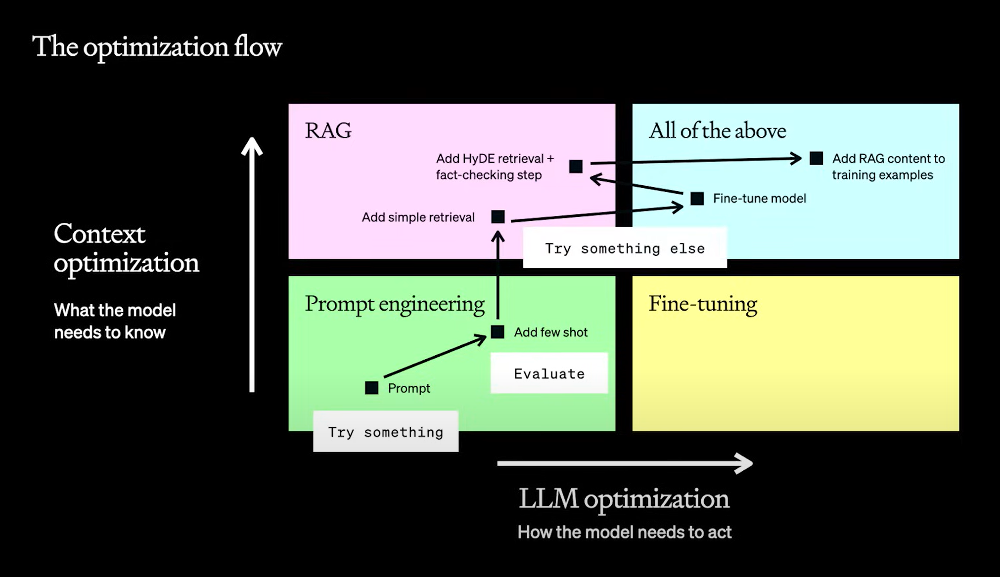

浅谈提示工程
为什么要写这篇博客？
虽然用了不少时间的 LLM，但是我从来没有花时间研究过如何写好提示词，都是想到什么就输入什么，不在意提示词的质量。对于一般场景，我们的输入随意一些并不会特别影响 LLM 的输出结果；而且随着技术的不断改进，只要简单讲几句，LLM 就能参透我们的意思。然而，如果要求 LLM 完成一些精密的任务，那么只是简单地提一些要求，LLM 就无法按照我们预期所想的那样解决问题，总会在某些地方出岔子。这个时候，也许有些人就会红温，不仅抱怨道：“这个模型怎么这么蠢啊！”——也许这不是因为 LLM 不够聪明，而是我们人类不够走心，
最近科研项目那边分配给我的任务是修改原有的提示词，以提高程序生成可视化数据的成功率；而且现在是开学前几周，也没有什么特别紧急且重要的任务，所以我就腾出一些时间，稍微学习了一下提示工程(prompt engineering)相关的知识，希望能利用这些知识写出高质量的提示词，少走一些弯路。
如果你是 AI 小白的话，那么希望这篇博客对你熟练掌握 AI 工具有所帮助！
提示工程
在了解提示工程之前，首先要知道“提示词”(prompt)是什么——它是为模型提供的输入，引导 AI 模型来生成特定的输出。
而提示工程就是一种通过设计和调整输入（提示词）来改善模型性能或控制器输出结果的技术。提示词的好坏可能让模型的回答质量有着天壤之别，因此为了获得理想的模型结果，我们需要不断调整、设计好的提示词，这就是提示工程要做的事。
误区警告
很多人会认为，提示词指的就是用户的输入——这是常见的误区。实际上，提示词的输入不仅包含用户的输入，还有其他来源，比如预设的提示词，甚至模型自己的输出都是提示词的一部分。
简言之，所有会被模型用于预测输出结果的内容，都是提示词。
重要性
提示工程很重要。
-
提示词是调用大模型能力的接口，是用好大模型能力的核心
-
在 LLM 应用的开发和性能优化的过程中，提示工程贯穿始终

- 一切 LLM 应用推荐先从提示工程着手建立原型，作为性能优化的基石
- 若提示工程无法满足需求，再分析性能瓶颈的原因，采取进一步策略
- 比如通过 RAG（检索增强生成）构造更好的模型输入，所以 RAG 本质上也是一种提示工程
- 若要使用微调(fine-tuning)，通过提示工程构造高质量的微调数据也是微调成功的关键
- 模型性能提升后，数据质量进一步提升，将更优质的数据用于模型训练，然后更好的模型产出更好的数据，如此构建正向迭代循环（也称数据飞轮），其中每个环节都离不开好的提示工程
如何写好提示词
六大原则（by OpenAI）
OpenAI 官方的提示工程文档总结了六大原则（链接贴在最后的“参考资料”部分），这里简单总结一下：
- 指令要清晰(Write clear instructions)
- 提供参考内容(Provide reference text)
- 将复杂的任务拆分成子任务(Split complex tasks into simpler substasks)
- 给 GPT “思考”实践（给出过程）(Give the model time to “think”)
- 使用外部工具(Use external tools)
- 系统性测试变化(Test changes systematically)
提示词框架&方法论
现在有各种各样的提示词框架，帮助我们写好提示词，这里就举一个 CRISPE 框架的例子：
- CR：Capacity and Role（能力和角色）。你希望 ChatGPT 扮演怎样的角色。
- I：Insight（洞察力）。背景信息和上下文（
看不出与“洞察力”一词有什么关系）。 - S：Statement（指令）。你希望 ChatGPT 做什么。
- P：Personality（个性）。你希望 ChatGPT 以什么风格或方式回答你。
- E：Experiment（实验）。要求 ChatGPT 提供多个答案。
例子
1 | Act as an expert on software development on the topic of machine learning frameworks, and an expert blog writer. The audience for this blog is technical professionals who are interested in learning about the latest advancements in machine learning. Provide a comprehensive overview of the most popular machine learning frameworks, including their strengths and weaknesses. Include real-life examples and case studies to illustrate how these frameworks have been successfully used in various industries. When responding, use a mix of the writing styles of Andrej Karpathy, Francois Chollet, Jeremy Howard, and Yann LeCun. |
Prompt is All You Need!
参考资料
如果有什么问题或想法，欢迎大家在评论区留言~